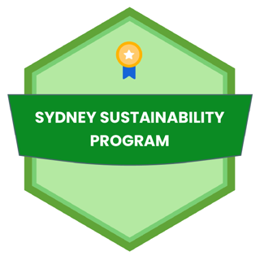
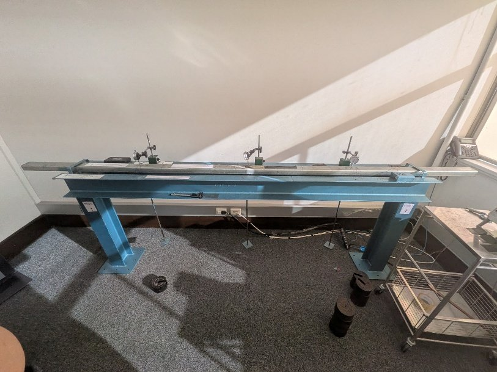
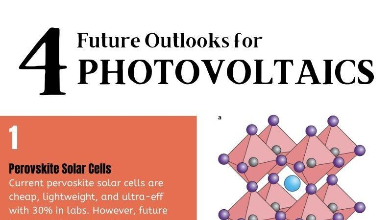
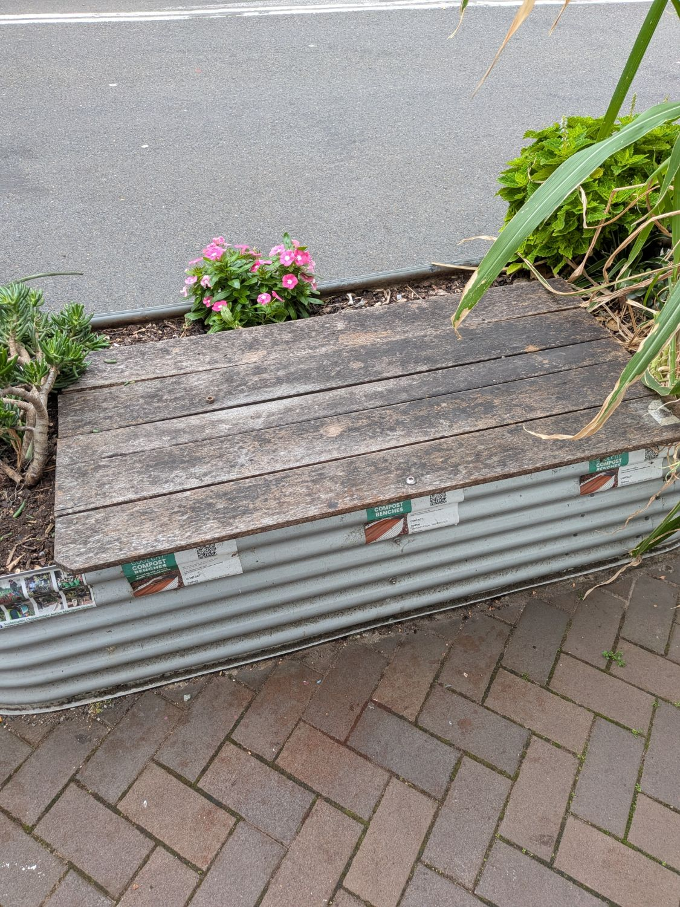
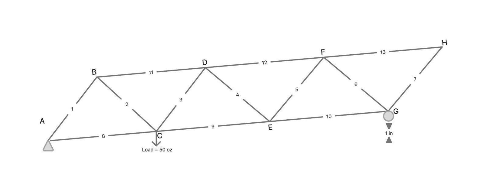
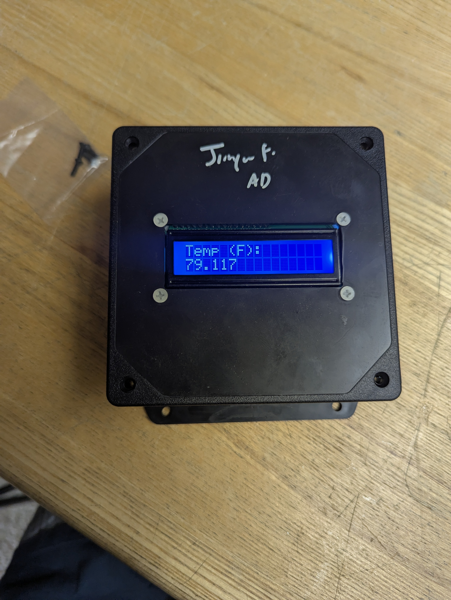

Energy storage
Battery electrodes, ion transport, and high-energy-density systems.
Mechanical engineering · Materials · Clean Energy
I’m Jinyu Fang, a Boston University mechanical engineering student exploring how thoughtful research, analysis, and fabrication can move sustainable technology forward.

About Me
I’m a Mechanical Engineering student at Boston University, minoring in Chemistry with a concentration in Energy Technologies & Sustainability.
I’m drawn to the materials-science side of the clean energy transition: how the microstructure of an electrode or the porosity of a battery can be engineered to move real energy systems forward.
My work spans low-tortuosity battery electrodes, carbon-emissions analysis, mechanical testing, and hands-on systems including structural trusses and automated sorting devices.
Battery electrodes, ion transport, and high-energy-density systems.
CAD, rapid prototyping, fabrication, and structural analysis.
Mechanical and chemical characterization using laboratory instrumentation.
Turning environmental data into practical, community-scale action.
Resume
Sept 2026 — Dec 2026
Engineering Mechanics I: Statics · BU College of Engineering
Grade problem sets and exams for 90+ undergraduates on a 7-day turnaround, flagging recurring misconceptions for instructors.
Jul 2026 — Present
BU Mesostructured Materials & Devices Lab
Cast low-tortuosity LFP battery electrodes with dual-scale porosity to speed ion transport and reduce capacity loss during fast lithiation, characterizing them with EIS and current cycling.
Jan 2026 — Jun 2026
Sustainable House, Sydney
Analyzed carbon, climate, and food-waste data for City of Sydney outreach graphs, built and ran Coolseats aerobic composting units that produced 5 tonnes of compost, and wrote articles turning sustainability data into actionable insights.
Feb 2026 — Jun 2026
University of Sydney
Selected for a competitive sustainability leadership program; volunteered 12+ hours with Pocket City Farms and BRAD Banish Recycling.
Sept 2025 — Dec 2025
Engineering Mechanics I: Statics · BU College of Engineering
Facilitated peer learning in statics and presented a post-lecture feedback poster to 10+ peers, professors, and professionals.
Dec 2024 — Present
Boston University Allocations Board
Distribute $1M in need-based funding to 450 undergraduate organizations and answer 40+ emails a week within 48 hours.
Oct 2024 — Present
BU Mars Rover Club
Designed organic-carbon procedures for detecting life on the rover, wrote a DNS assay SOP for soil analysis, and built a rack-and-pinion cuvette holder.
2024 — May 2028
B.S. Mechanical Engineering
Concentration: Energy Technologies & Sustainability
Minor in Chemistry · GPA 3.77/4.00
Coursework: Statistical Thermodynamics, Materials Science, Mechanics of Materials, Instrumental Chemical Analysis, Organic Chemistry, Programming for Engineers

Feb 2026 — Jun 2026
Sydney Global Mobility, The University of Sydney
Issued August 14, 2026
Extracurricular program for study abroad and exchange students exploring sustainability in an Australian context, completed through 12+ hours of sustainability-related volunteering.
Software
Instrumentation
Lab & fabrication
Sustainability
Selected work

Design & Fabrication · Mechatronics

Design & Fabrication · Mechatronics

Energy & Sustainability · Research

Design & Fabrication · Automation

Testing & Materials · Structures

Testing & Materials · Laboratory

Energy & Sustainability · Research

Energy & Sustainability · Data & field work

Design & Fabrication · Structures

Design & Fabrication · Electronics

Testing & Materials · Chemistry